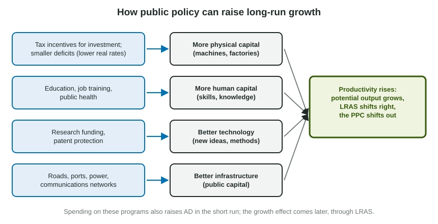

The previous topic named the sources of long-run growth: physical capital, human capital, technology and resources. This topic asks what public policy can do about them. The answer is less about fighting the next recession and more about the economy ten or twenty years from now: on the AD-AS graph, policy aimed at LRAS rather than at AD.
Four channels

| Source of growth | Policies aimed at it | How it raises potential output |
|---|---|---|
| Physical capital | Tax credits or lower taxes on business investment; smaller budget deficits | Firms add machines and buildings; smaller deficits mean less crowding out and lower real interest rates |
| Human capital | Public schools and universities, job training, apprenticeships, public health | Skilled, healthy workers produce more per hour |
| Technology | Funding for research, patent protection for inventions | New ideas let the same resources produce more |
| Infrastructure | Roads, ports, power grids, communications networks | Firms ship, travel and communicate faster and more cheaply |
Each channel ends in the same place: productivity rises, potential output rises, LRAS shifts right and the PPC shifts out.
Short run and long run
Many growth policies work on both sides of the AD-AS model, at different times. Building a highway is government spending, so while it is under way AD shifts right and output and the price level rise. Once it is finished and cuts shipping costs for firms, potential output is higher and LRAS shifts right.
Worked example: two graphs for one program. A government at full employment builds a network of highways.
- During construction. The spending is part of AD. Shift AD right; the new short-run equilibrium has a higher price level and higher real output, past full employment.
- After completion. Faster, cheaper shipping raises productivity. Shift LRAS right to a higher full-employment output.
- The catch. If the government borrows to pay for it at full employment, the higher real interest rate crowds out some private investment, which offsets part of the gain in capacity.
Supply-side fiscal policy
Supply-side fiscal policy uses taxes and spending to change incentives to work, save and invest. Lower tax rates on wages may lead people to work more hours; lower taxes on saving and investment may lead households to save and firms to invest more. If they do, the labor force, the capital stock and potential output grow, and LRAS shifts right.
A tax cut also raises disposable income right away, so it shifts AD right in the short run. Economists agree on that demand effect; they disagree about how large the supply-side effect on work and investment is, and that question is part of real policy debates. For the exam, describe both possible effects and the channel each works through, rather than taking a side.
Spending that does not add capacity
Not every program raises long-run growth. A cash transfer to households raises disposable income and consumption, so it shifts AD, but it adds no machines, skills or ideas, so it does not shift LRAS. At full employment, a rise in AD with no rise in capacity mostly raises the price level. That does not make transfers good or bad; it means their purpose is different, such as supporting incomes, not raising potential output.
Slip to avoid: "The government spends more, so long-run growth rises." Name the channel: spending raises long-run growth only if it adds physical capital, human capital, technology or infrastructure, and borrowing to pay for it can crowd out private investment.
Reading evidence about growth
Comparisons across countries can show patterns: countries with more schooling or more investment often grow faster. To see the link to one factor, compare countries that are alike in the others. Even then, a pattern in a few countries is evidence, not proof; other differences, such as institutions or natural resources, may also matter.